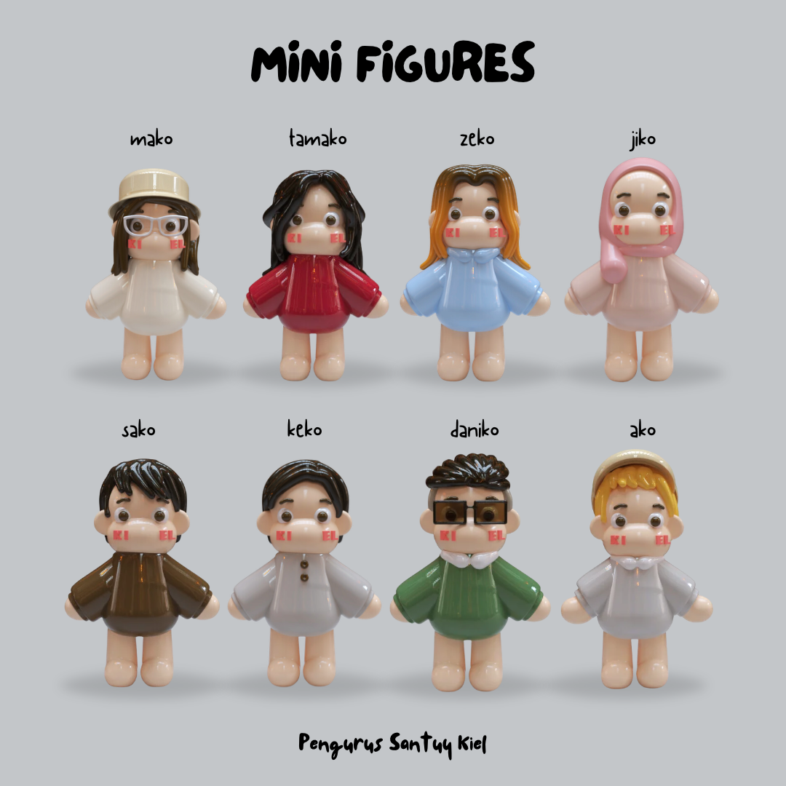

3D MODELLING / CHARACTER DESIGN / 2024
Mini Figures
A collection of personalised 3D mini characters created in Womp for an Instagram post by PPI Kiel.
mako
One of the personalised mini figures from the collection.
scroll to zoom
about the project
Mini Figures started as my first experiment with Womp, a browser-based 3D modelling tool. I created a collection of eight personalised characters based on real-life photo references for an Instagram post by PPI Kiel.
I wanted each figure to feel like part of the same collection while still having its own personality. So I kept their proportions and overall style consistent, then explored details like hairstyles, glasses, clothing, and colours to make each character recognisable.
Since I was completely new to Womp at the time, a lot of the process involved figuring things out as I went. What started as an opportunity to try something new eventually became a complete set of little characters.
full character set
The final output brought all eight characters together in one visual set. Even though each figure was customised individually, the shared proportions and glossy toy-like finish helped unify them as a collection.

Originally created for PPI Kiel's Instagram. See how the mini figures appeared in the published post.
view the original Instagram post ↗